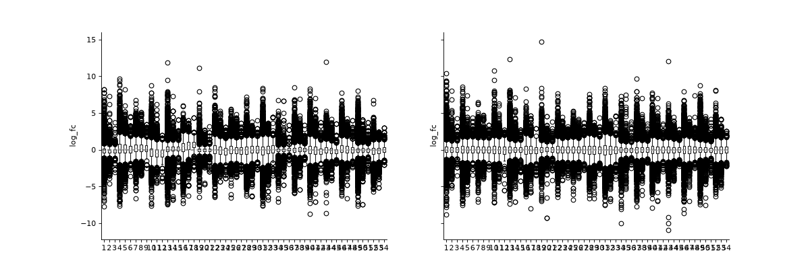
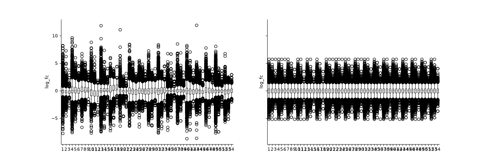
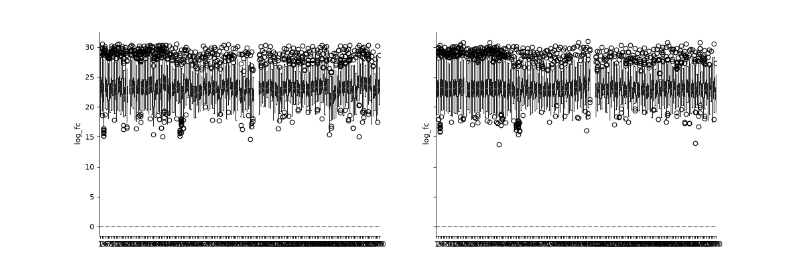

Normalization#
Autoprot Preprocessing Functions.
@author: Wignand, Julian, Johannes
@documentation: Julian
- autoprot.preprocessing.normalization.cyclic_loess(df, cols: list[str] | Index, return_cols: bool = False, print_r: bool = False)[source]#
Perform cyclic Loess normalization.
- Parameters:
df (pd.DataFrame) – Input dataframe.
cols (list of str) – Colnames to perform normlisation on.
return_cols (bool, optional) – Whether to return a list of names corresponding to the columns added to the dataframe. The default is False.
print_r (bool) – Whether to return output from the R command line. Default is False.
- Returns:
The original dataframe with extra columns _normalized.
- Return type:
pd.DataFrame
References
[1] https://doi.org/10.1093/bioinformatics/19.2.185
[2] Cleveland,W.S. and Devlin,S.J. (1998) Locally-weighted regression: an approach to regression analysis by local fitting. J. Am. Stat. Assoc., 83, 596–610
[3] https://en.wikipedia.org/wiki/Local_regression
Notes
Cyclic loess normalization applies loess normalization to all possible pairs of arrays, usually cycling through all pairs several times. Loess normalization (also referred to as Savitzky-Golay filter) locally approximates the data around every point using low-order functions and giving less weight to distant data points.
Cyclic loess is slower than quantile, but allows probe-wise weights and is more robust to unbalanced differential expression.
Examples
phos = pd.read_csv("../data/Phospho (STY)Sites_minimal.zip", sep="\t", low_memory=False) phosRatio = phos.filter(regex="^Ratio .\/.( | normalized )R.___").columns phosLog = pp.log(phos, phosRatio, base=2) noNorm = phosLog.filter(regex="log2_Ratio ./. R.___").columns phos_norm_r = pp.cyclic_loess(phosLog, noNorm) vis.boxplot(phos_norm_r, [noNorm, phos_norm_r.filter(regex="_norm").columns], compare=True) plt.show()
(
Source code,png,hires.png,pdf)
{kind=link}
{kind=link}
- autoprot.preprocessing.normalization.loading_norm(df: DataFrame, cols: list[str] | Index, return_cols: bool = False, how: Literal['median', 'mean'] = 'median') DataFrame | Tuple[DataFrame, List[str]][source]#
Loading normalisation.
- Parameters:
df (pd.DataFrame) – Input dataframe.
cols (Union[list[str], pd.Index]) – Columns to normalise.
return_cols (bool) – If True the column names of the normalized columns are returned in addition to the dataframe. The default is False.
how (median or mean) – Should each column be normalized against the mean or the median intensity of all columns.
Notes
This function assumes intensity columns to be log transformed.
- Returns:
pd.DataFrame – Dataframe with new normalized columns.
list[str] – The normalized column names.
- autoprot.preprocessing.normalization.norm_to_prot(entry: Series, prot_df: DataFrame, to_normalize: list[str])[source]#
Normalize phospho data to total protein level.
Function has to be applied to phosphosite table. e.g. phosTable.apply(lambda x: normToProt(x, dfProt, toNormalize),1)
- Parameters:
entry (pd.Series) – Row-like object with index “Protein group IDs”.
prot_df (pd.DataFrame) – MQ ProteinGroups data to which data is normalized.
to_normalize (list of str) – Which columns to normalize.
- Raises:
ValueError – The input array does not contain an index “Protein group IDs”.
- Returns:
Input array with normalized values.
- Return type:
pd.Series
Notes
Normalization is calculated by subtracting the value of columns toNormalize of the protein dataframe from that of the entry, i.e. if intensity ratios such as log(pep/prot) should be obtained the operation has to be applied to log transformed columns as log(pep) - log(prot) = log(pep/prot).
- autoprot.preprocessing.normalization.quantile_norm(df, cols: list[str] | Index, return_cols=False, backend='r', print_r: bool = False)[source]#
Perform quantile normalization.
- Parameters:
df (pd.DataFrame) – Input dataframe.
cols (list of str) – Colnames to perform normlisation on.
return_cols (bool, optional) – if True also the column names of the normalized columns are returned. The default is False.
backend (str, optional) – ‘py’ or ‘r’. The default is “r”. While the python implementation is much faster than r (since R is executed in a subroutine), the R Function handles NaNs in a more sophisticated manner than the python function (which just ignores NaNs)
print_r (bool) – Whether to return output from the R command line. Default is False.
- Returns:
The original dataframe with extra columns _normalized.
- Return type:
pd.DataFrame
Notes
The quantile normalization forces the distributions of the samples to be the same on the basis of the quantiles of the samples by replacing each point of a sample with the mean of the corresponding quantile. This is applicable for large datasets with only few changes but will introduce errors if the rank assumption is violated i.e. if there are large variations across groups to compare. See [2].
References
[1] https://doi.org/10.1093/bioinformatics/19.2.185
[2] https://www.biorxiv.org/content/10.1101/012203v1.full
Examples
phos = pd.read_csv("../data/Phospho (STY)Sites_minimal.zip", sep="\t", low_memory=False) phosRatio = phos.filter(regex="^Ratio .\/.( | normalized )R.___").columns phosLog = pp.log(phos, phosRatio, base=2) noNorm = phosLog.filter(regex="log2_Ratio ./. R.___").columns phos_norm_r = pp.quantile_norm(phosLog, noNorm, backend='r') vis.boxplot(phos_norm_r, [noNorm, phos_norm_r.filter(regex="_norm").columns], compare=True) plt.show()
(
Source code,png,hires.png,pdf)
{kind=link}
{kind=link}
- autoprot.preprocessing.normalization.vsn(df, cols: list[str] | Index, return_cols: bool = False, invert: list[int] | None = None, suffix: str = '_normalized', print_r: bool = False)[source]#
Perform Variance Stabilizing Normalization. VSN acts on raw intensities and returns the transformed intensities. These are similar in scale to a log2 transformation. The columns generated by VSN have the suffix _norm.
- Parameters:
df (pd.DataFrame) – Input dataframe.
cols (list of str) – Colnames to perform normalization on. Should correspond to columns with raw intensities/iBAQs (the VSN will transform them eventually).
return_cols (bool, optional) – if True also the column names of the normalized columns are returned. The default is False.
invert (list of int, optional) – If the data is inverted (e.g. 1/x) the VSN will be performed on the inverted data. The default is None.
suffix (str, optional) – Suffix to be added to the column names of the normalized columns. The default is “_normalized”.
print_r (bool) – Whether to return output from the R command line. Default is False.
- Returns:
pd.DataFrame – The original dataframe with extra columns _normalized.
list – Column names after vsn transformation
References
[1] Huber, W, von Heydebreck, A, Sueltmann, H, Poustka, A, Vingron, M (2002). Variance stabilization applied to microarray data calibration and to the quantification of differential expression. Bioinformatics 18 Supplement 1, S96-S104.
Notes
The Vsn is a statistical method aiming at making the sample variances independent of their mean intensities and bringing the samples onto a same scale with a set of parametric transformations and maximum likelihood estimation.
See https://www.bioconductor.org/packages/release/bioc/html/vsn.html: Differences between transformed intensities are analogous to “normalized log-ratios”. However, in contrast to the latter, their variance is independent of the mean, and they are usually more sensitive and specific in detecting differential transcription.
Examples
We will log2-transform the intensity data to show that VSN normalization results in values of similar scale than log2 transformation. Note how the VSN normalization and the log2 transformation result in values of similar magnitude. However, the exact variances of the two transformations are different.
phos_lfq = pd.read_csv("../data/Phospho (STY)Sites_lfq_minimal.zip", sep="\t", low_memory=False) intens_cols = phos_lfq.filter(regex="Intensity .").columns.to_list() phos_lfq[intens_cols] = phos_lfq[intens_cols].replace(0, np.nan) phos_lfq, norm_cols = pp.vsn(phos_lfq, intens_cols, return_cols = True) phos_lfq, log_cols = pp.log(phos_lfq, intens_cols, base=2, return_cols=True) vis.boxplot(phos_lfq, reps=[log_cols, norm_cols], compare=True)
(
Source code,png,hires.png,pdf)
{kind=link}
{kind=link}